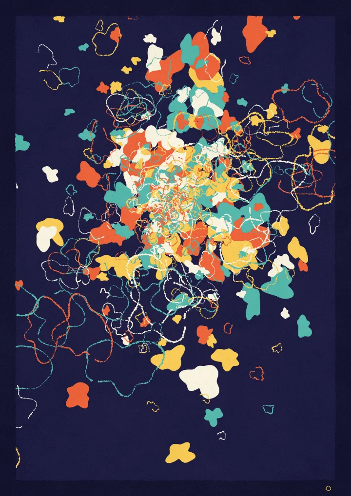

I design digital products that define new categories.
Hi, I’m Chris.
I’ve been a designer, technologist, and founder for 20+ years.
I learn by making things.
Most of my work starts as a question.
How can fans deepen connection to their favorite IP?
What if they could own a piece of it?
What if every small business had a COO in their pocket?
My process is to experiment and iterate on new ideas.
Those questions became a companion app for TV series, an animated short film, and an always-on AI assistant.
Each idea goes through many rounds of sketches and tests.

In 2023, I started co-creating art with AI.
In Interplay, I set the rules and GPT-4 helped write the code.
The code draws each piece by itself, one shape at a time.
Then a second hand traces another piece’s shapes over it in pen.
Was AI a collaborator or a tool? It felt like both.
But art still needs a person who means something by it.
My professional journey is paved with curiosity and collaboration.
In 2009, I founded Lift UX, a product design agency.
Our Story Sync apps for The Walking Dead and Breaking Bad earned an Emmy nomination.
Mad Men: The Fan Cut earned another. Fans remade the first episode, scene by scene.
In 2017, 10up acquired Lift UX.
At 10up, I grew our design team from 5 people to 25.
I led design projects for Microsoft, Starbucks, the California DMV.
My favorite moments were watching designers grow, take the lead, and push each other.
Next, at UltraDAO Studios, I built a creative studio from scratch.
We earned $2.6M with our first release.
I’m more proud of how we worked: everyone brought their best ideas forward.
We made Woodies, characters that began on the blockchain.
Then they outgrew it.
Woodies: Origin put them in a short film.
It was an official selection at the Aesthetica Short Film Festival in 2023.
We released them as 3D characters in the metaverse.
From characters to avatars: at Roblox, I designed avatar tools for 3D creators.
I researched creator workflows and designed tools to meet their needs.
My goal: less frustration, more creativity.
Working with incredible teams taught me this single truth.
Breakthrough products are made by people who leave their comfort zone.
Which brings me back to that question about helping small business owners.
Now I’m leading design for Homebase Assistant.
The vision is to be an operational partner for small business owners.
It’s the hardest work I’ve done, and the best.
Small businesses are near and dear to me.
Here’s what I’m building now.
- Hollerback Live Lets an AI agent call and text people.
- Emeri Live A check and a certification of how well you work with AI.
- Woodies Live The home of the Woodies world: its films, its lore and its 9,739 characters.
- Lofty Ambitions Live A tower management game in Tokyo-inspired pixel art, for Mac and Windows.
My design principles
Ask bigger questions.
Create and test ideas constantly.
Ship the strongest idea, then iterate.
Build with people who make you better.